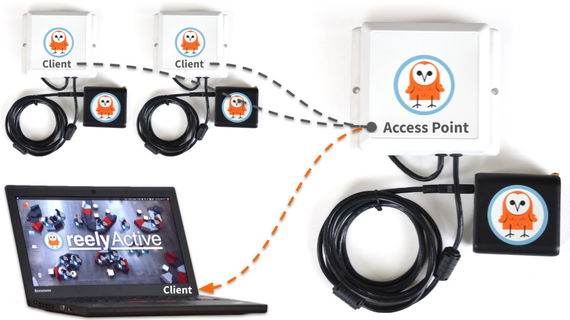

Create a WLAN of Owl-in-Ones and a laptop
Our step-by-step guide to create a local wireless network by configuring an Owl-in-One as an access point.
The TL;DR (Too Long; Didn't Read)
Learn how we at reelyActive prepare a standalone, wireless data collection and demo kit from Owl-in-Ones and a laptop.
- What will this accomplish?
- A standalone wireless network of Owl-in-Ones forwarding data to a laptop running our open source software.
- Why would I need this?
- For quick demos and short-term data collection, there's nothing more convenient than simply powering on all the devices. The rest happens automagically.
- So no WiFi or Internet required?
- Exactly. An Owl-in-One acts as a WiFi access point for all other devices to connect together in a local area network.
Prerequisites
A laptop or computer configured with the reelyActive open source software suite.
-

Install our open source software suite on a laptop
Our step-by-step guide to run reelyActive's open source software suite on a laptop or personal computer. -

Install our open source software suite on a Pi
Our step-by-step guide to make a Raspberry Pi into an open RTLS, RFID and M2M platform.
Configuring an Owl-in-One as an AP Step 1 of 4
Physically connect to the Owl-in-One and issue commands to configure it as a WiFi access point.
- Why an access point?
- An access point acts as a hub through which all other nodes in the wireless network connect with one another.
- Why use an Owl-in-One?
- It is possible to use a standalone AP, but since the Owl-in-One is well suited to this role, this saves complexity and cost.
Connect to the Owl-in-One via USB Part 1
From any computer with the prerequisite t2-cli installed:
- Connect the USB cable of the Owl-in-One to the computer
- Wait approximately 30 seconds for the device to boot 30 sec
The Owl-in-One is now ready to accept commands.
Configure the Owl-in-One as an AP Part 2
From the USB-connected computer open a terminal and then:
- Disable WiFi client mode with the command
t2 wifi --off - Configure the WiFi AP with SSID reelyActive and password owl-in-one with the command:
t2 ap -n "reelyActive" -p "owl-in-one" - Enable WiFi AP mode1 with the command
t2 ap --on
Observe the response Access Point succesfully enabled and the SSID and Password as configured. The Owl-in-One is now hosting a WiFi network for its peers!
Connecting the laptop to the WLAN Step 2 of 4
Select the reelyActive WiFi network and configure a static IP address.
- Why a static IP address?
- In the next step all Owl-in-Ones will be configured to forward data to the laptop via its IP address.
- Should the AP be powered on?
- Yes. The AP Owl-in-One must be powered on for the laptop to be able to connect.
Connect to the reelyActive WiFi network Part 1
From the laptop :
- Select from the list of available WiFi networks the one called reelyActive
- When prompted, enter the password owl-in-one
- Open a terminal and confirm the connection with the command
ifconfig
The laptop is connected to reelyActive WiFi network and is assigned an IP address by the AP via DHCP. This IP address is likely to change on subsequent connections. Let's make it static.
Configure a static IP address Part 2
From the laptop :
- Open the Network Manager and select Edit Connections...
- From the list of WiFi connections select reelyActive and click Edit
- Select the IPv4 Settings tab
- From the Method pulldown, select Manual
- Click Add to add the static IP address:
- Enter 192.168.1.10 as the address
- Enter 255.255.255.0 as the netmask
- Enter 192.168.1.101 as the gateway
- Click Save to complete the configuration
Disconnect from and reconnect to the reelyActive WiFi network to ensure that the IP settings update.
Open a terminal and confirm the static IP address 192.168.1.10 with the command ifconfig
The laptop is now connected to the reelyActive WiFi network with a static IP address.
Configuring the Owl-in-One Software Step 3 of 4
Clone the software repository and update the configuration.
- What software?
- The Owl-in-One runs lightweight Node.js software which will be updated with a new configuration.
- Any prerequisites?
- Yes. This step requires git and npm.
This step requires an Internet connection. If using the same laptop as previously, disconnect from the reelyActive WiFi network and connect instead to a network with Internet connectivity.
Clone the tessel-edge repository Part 1
From the computer satisfying the prerequisites, open a terminal and then:
- Browse to a folder where the software will be cloned
- Clone the tessel-edge repository with the command
git clone https://github.com/reelyactive/tessel-edge.git
The tessel-edge software is now cloned to the laptop.
Install package dependencies Part 2
From the same computer , open a terminal and then:
- Browse to the root of the tessel-edge repository
- Install dependencies with the command
npm install
The tessel-edge software now has all package dependencies installed.
Update software configuration Part 3
From the same computer , open a terminal and then:
- Browse to the root of the tessel-edge repository
- Open the file config.js for editing
- Update the RADDEC_TARGETS as below
const RADDEC_TARGETS = [
{ host: "192.168.1.10", port: "50001", protocol: "udp" }
];The tessel-edge software is now configured to forward data to the laptop's static IP address. Let's program the Owl-in-Ones!
Programming the Owl-in-Ones Step 4 of 4
Program the software of each Owl-in-One and connect to the WiFi network.
- What are we programming?
- The Owl-in-One is based on the Tessel 2 platform and is programmed as such.
- Any prerequisites?
- Yes. This step requires the t2-cli package to be installed on the laptop.

Repeat Parts 1 through 3 for each Owl-in-One.
Connect to the Owl-in-One via USB Part 1
From the same computer :
- Connect the USB cable of the Owl-in-One to the computer
- Wait approximately 30 seconds for the device to boot 30 sec
The Owl-in-One is now ready to accept commands.
Push the software to the Owl-in-One Part 2
From the same computer , open a terminal and then:
- Browse to the local tessel-edge repository
- Push the software to the Owl-in-One with the command
t2 push index.js
The software will begin to run, and will start automatically whenever the Owl-in-One is powered on.
Connect to the reelyActive WiFi network Part 3
This part does not apply to the Owl-in-One configured as an access point.
From the same computer , open a terminal and then:
- Configure the WiFi client with SSID reelyActive and password owl-in-one with the command
t2 wifi -n "reelyActive" -p "owl-in-one" - Confirm the connection (assuming the AP is powered on) with the command
t2 wifi

The Owl-in-One is now connected to the WiFi network and forwarding real-time data to the laptop's IP address.
Do you like this document template?
It's based on Bootstrap 4 MIT and Font Awesome 5 (Free) MIT. Our Web Style Guide MIT has all the details. Sharing and feedback are encouraged!
reelyActive's Web Style GuideWhere to next?
Continue exploring our open architecture and all its applications.
-

diyActive Home
The home for reelyActive developers.